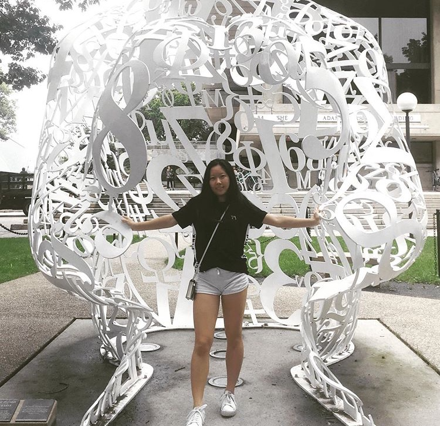

The Portable Piano was created by Neha Vinesh, Aniya Payton, and Lucy Yang in a Girls Who Code
Summer Immersion Program in Chicago. They wanted to combine their love for music and computer
science so they used computer hardware to create an electronic piano composed of 24 buttons and
corresponding leds. Along with the physical keyboard, they created this website to help aspiring
musicians enhance their skills.

Neha Vinesh is going to be senior at Naperville Central High School this fall.
Her main tasks in this project were the construction of the keyboard, the code that
went into it, and the editing/refinement of this website. In her free time, Neha
enjoys playing golf and the piano.

Aniya Payton is currently a rising junior at Oak Park and River Forest High School.
Her main role within the project was coding the website. In her free time, Aniya
enjoys teaching herself how play instruments as well as partcipating in theatre.


Lucy Yang is going to be a senior at Neuqua Valley High School. Her prime focus
in this project was to help with constructing the keyboard and also the code for
the keyboard. Along with that, Lucy provided input on the website. In her free time,
Lucy enjoys playing piano and traditional Chinese Dancing.